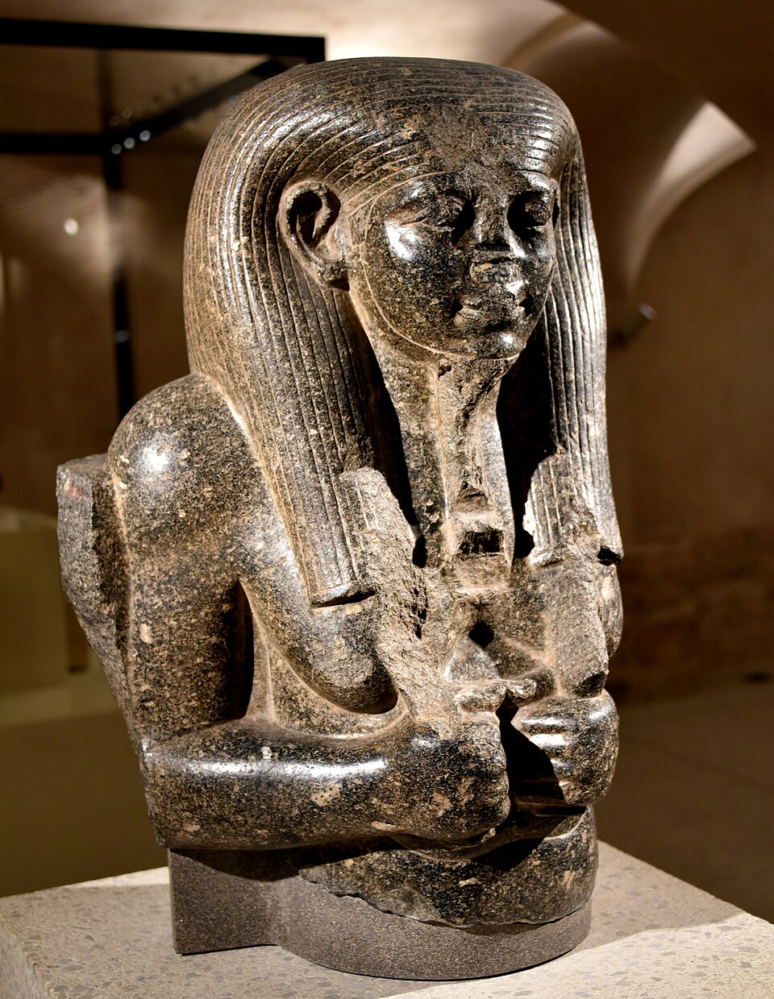

Нил для Египта — не пейзаж, а кормилец. И Египет поблагодарил его богом. Хапи — это не вода как стихия (реку зовут просто «Итер», «Река»), а сам разлив: те самые месяца, когда вода подходит к полям, приносит чёрный ил и наполняет каналы. Хапи — олицетворение урожая: без него нет хлеба, нет пива, нет Маат в амбарах.
Его образ намеренно двойственен и беспол: отвислый живот, налившая грудь, широкие бедра — «тот, кто даёт и питает», а не мужчина и не женщина. Он андрогин изобилия: грудь кормит, живот полон, и оба берега благословлены. На головах у него — растение сем (папирус/лютик), знак «зелени», из-за которого его зовут «владыка зелени».
Пару Хапи: красный и белый
Хапи изображают двойнёй: Хапи Нижнего Египта с папирусом на голове и Хапи Верхнего Египта с лотосом (растение сем). Их руки вместе завязывают узел Семат-тауи — связку растений вокруг знака единства земли — по обеим сторонам царского трона. Так разлив становится политическим богом Египта: вода кормит обе половины, и обе завязаны в один узел. Его эпитеты: «тот, кто наполняет каналы», «владыка белого хлеба и ячменя», «господин рыбы и птицы топей».
Гимн Хапи
«К тебе текут подношения, властелин рыбы и птицы топей… Ты создаёшь пастбище для скота и хлеб перед дверями…» — так гремит Гимн Хапи (папирус Саллье II, британская коллекция). В нём разливу благодарятся как источнику всей еды, одежды (льна), чистоты (омовений) и праздника. Гимн поётся при царе, но голос у него крестьянский: в нём не миф, а хозяйственный год Египта.
Праздник прихода воды
Разлив ждали как праздник: по «Нильским меркам» замеряли высоту воды — от неё зависела подать и хлеб. С приходом воды ставили защитные плотины и шлюзы, в храмах открывали «каны Хапи», несли процессии с моделями домов и садов. Жрецы «встречали Хапи» с подношениями; в народе разливу пели и бросали в воду цветы и фигурки, а в эпоху Птолемеев — монеты. Он же «счётчик»: от разлива ведёт отсчёт гражданский год.
Где Хапи не путают
Есть ещё один Хапи — один из четырёх сынов Хора, шакалоголовый хранитель лёгких умершего в канопах: это совсем другой бог с тем же именем. Бог разлива — всегда полный, всегда «двойня», всегда с растением сем на голове и водой, льющейся из его сосуда. На саркофагах и в «Книге мёртвых» разлив тоже «живит мёртвых»: «Хапи орошает уста мёртвых» — даже в Полосах тростника течь будет вода жизни.
Интересные факты
- Имя Хапи на троне фараона: титул «Нсу-бیتی» и узел Семат-тауи — работа «обоих Хапи»: разлив буквально «связывает царство».
- Его часто рисуют с водой, льющейся из сосуда на алтарь: жест — формула «я даю тебе жизнь всякую».
- В «Плаче Нила» и поучениях голод описывается как «Хапи отстал от полей» — беда воспринимается как гнев или опоздание бога, а не как погода.
- Праздник разлива дожил до наших дней в Египте как «Вафа ан-Нил» — ночь Нила, 15 августа: та же благодарность той же воде.